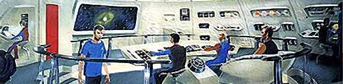
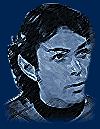
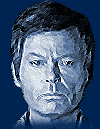
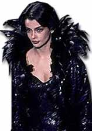

|
 m
meados dos anos 1970, a Paramount queria voltar a produzir Jornada
nas Estrelas. Em 1977, o estdio acabou decidindo criar uma
nova rede de televiso e levar Jornada consigo. Nascia a Fase
II, uma nova srie com o elenco clssico, mostrando a
segunda misso de Kirk a bordo da Enterprise. No final, o projeto
acabou abortado, mas deixou muita histria para trs. Confira! m
meados dos anos 1970, a Paramount queria voltar a produzir Jornada
nas Estrelas. Em 1977, o estdio acabou decidindo criar uma
nova rede de televiso e levar Jornada consigo. Nascia a Fase
II, uma nova srie com o elenco clssico, mostrando a
segunda misso de Kirk a bordo da Enterprise. No final, o projeto
acabou abortado, mas deixou muita histria para trs. Confira! |




|
Comeo, meio e fim
de um sonho Saiba exatamente como e por que a Paramount decidiu trazer de volta Gene Roddenberry e o antigo elenco de Jornada nas Estrelas ( exceo de Leonard Nimoy, o Spock) para a Fase II e descubra o quo perto essa reedio da Srie Clssica esteve de acontecer, em quatro artigos especiais, feitos por Fernando Penteriche.
Especiais "Meu voto de celibato est registrado" por
Fernando Penteriche 
|